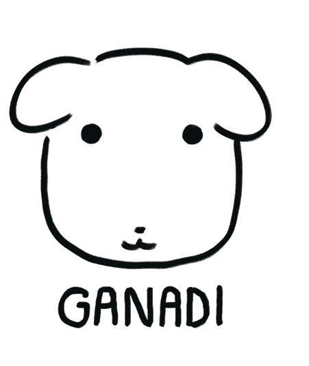

안녕하세요. 정민서입니다
이렇게 편지를 쓰는 것은 저를 소개하고싶기 때문입니다

아마도 "누구세요?"라는 의문만 떠오르시겠지요. 먼저 자기소개를 하겠습니다.
반갑습니다
반가워요
디자인에서 가장 중요한 것은 단순한 시각적 아름다움을 넘어서, 사람과 사람을
연결하는 힘입니다
디자인은 결국 누군가에게 보여지고, 경험되는 것이기 때문에 다양한 사람들의
시선에서 바라볼 수 있는 능력이 필요한 것 같습니다
이를 위해서는 한 가지 관점에 머무르지 않고, 서로 다른 배경과 경험을
이해하려는 태도가 중요하고
다양한 경험을 통해 시야를 넓히고, 그것을 바탕으로 더 많은 사람들이 공감할
수 있는 디자인을 만들고 싶습니다
아직 부족한 디자이너지만, 한 번 만나주시지 않겠습니까?
대답은 아래 주소로 직접 오셔서 해주셔도 좋고, 휴대폰으로 전해주셔도
좋습니다.
시디과 207호
010-0000-0000